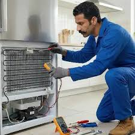
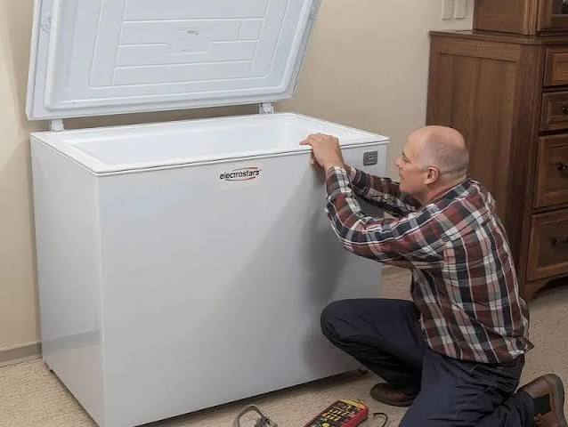

الديب فريزر هو جهاز الحفظ الأساسي في البيت لتخزين الأطعمة لفترات طويلة، ويعمل بشكل متواصل دون إنقطاع. ولأنه يعمل بجهد كبير فإنه ترسل إشارات إنذار مبكرة قبل أن يتوقف فجأة؛ ومن أبرز هذه العلامات صدور صوت صاخب أو اهتزاز غير معتاد، ضعف التبريد وتسييح الأطعمة، تكوين ثلج كثيف (فروست) داخل الأدراج، تسريب مياه من أسفل الجهاز، استمرار عمل الموتور دون فاصل زمني، ظهور كود خطأ على الشاشة الرقمية، أو صدور روائح غير طيدة من الداخل.
كل علامة من هذه العلامات توضح أن هناك مكوناً يعمل خارج نطاق كفاءته التصميمية، والتدخل المبكر يحمي قطع الغيار الرئيسية مثل الموتور (الكمبروسر)، غاز التبريد، أو كارتة التحكم من التلف الكامل ويحافظ على ميزانيتك وسلامة الأطعمة.
أجهزة الديب فريزر تخضع لظروف تشغيل قاسية في الأجواء الحارة وفتح الباب المتكرر لتخزين الأطعمة، إلى جانب تذبذب التيار الكهربائي المفاجئ، وهي عوامل تسرع من إجهاد الدائرة الميكانيكية والكهربائية وتؤثر على كفاءة التجميد.
هذه الظروف تجعل الكمبروسر ومروحة التوزيع وفريون التبريد يعملون بجهد مضاعف، ولهذا فإن أغلب بلاغات الأعطال تتعلق بانسداد دائر الفريون، تلف كاوتش الباب وتسريب الهواء البارد، أو انسداد فتحات التهوية، وهي مشاكل نحلها بمهنية في زيارة منزلية واحدة.
الديب فريزر يعتمد على منظومة تبريد مغلقة تبدأ بضغط غاز الفريون عبر الكمبروسر ليرتفع حرارته وضغطه، ثم يمر عبر المكثف لتبريده وتحويله لسائل، ليithمر في المبخر لامتصاص الحرارة من داخل الفريزر وإعطاء أقصى درجة تجميد للأطعمة.
كارتة التحكم الإلكترونية أو الثرموستات هي المسؤول عن تنظيم درجات الحرارة بدقة وفصل وتشغيل الكمبروسر حسب الحاجة، وأي خلل في هذه المنظومة يوقف التبريد تماماً أو يتسبب في تراكم الثلج.
الديب فريزر الرأسي (أدراج) يوفر سهولة فائقة في تنظيم وترتيب الأطعمة ورؤيتها بوضوح، ويعتمد غالباً على تقنية النوفروست (بدون ثلج)، ويتميز بتصميم أنيق يناسب المطابخ الحديثة، لكنه يتطلب مساحة رأسية ويحتاج حرصاً على إغلاق الأدراج بإحكام.
أما الديب فريزر الصندوقي (الأفقي) فيتميز بقدرته الهائلة على استيعاب أحجام وأكياس كبيرة جداً، واحتفاظه بالبرودة لفترات طويلة جداً عند انقطاع الكهرباء، وتكلفته الاقتصادية، لكنه قد يحتاج لإذابة الثلج يدوياً من فترة لأخرى وصعوبة البحث عن الأغراض في القاع.

فحص دائرة التبريد والأجزاء
إصلاح وشحن الفريون بالمنزلالفارق بين شحن الفريون أو تركيب قطعة غيار أصلية وأخرى مقلدة يظهر سريعاً في كفاءة التبريد واستهلاك الكهرباء. تلتزم **المؤسسة المعتمدة** بتوريد وتركيب كمبروسورات، ثرموستات، سخانات نوفروست، وكارتات أصلية 100% مع فاتورة رسمية، ويشمل الضمان ستة شهور كاملة على القطعة وعلى المصنعية المنفذة، مع زيارة مجانية تماماً إذا تكرر نفس العطل.
غالباً يرجع لعطل في دائرة النوفروست (السخان أو الثرموديسك) أو نتيجة ترك الباب مفتوحاً لفترة طويلة مما يتيح دخول هواء رطب يتكثف ويتجمّد فوراً.
بسبب نقص غاز الفريون نتيجة وجود تسريب بدائرة التبريد، أو تلف الثرموستات، أو وجود اتساخ شديد بمكثف الجهاز الخلفي يمنع تشتيت الحرارة.
نعم، يتم تحديد مكان التسريب بدقة واختباره، ثم معالجته وإعادة شحن الدائرة بغاز الفريون الأصلي بالكامل داخل منزلك وأمام عينيك.
عادة ما يستغرق من ساعتين إلى 4 ساعات حتى تصل الحلة الداخلية لدرجة التجميد المثالية بعد إعادة التشغيل والشحن.
95% من أعطال الديب فريزر وشحن الفريون وإصلاح الكارتات يتم إنجازها باحترافية تامة داخل منزلك دون أي حاجة لنقل الجهاز.
تواجه مشكلة في جهازك؟ اختر العطل من القائمة أدناه لمعرفة الأسباب المحتملة وطرق الإصلاح، أو اتصل بنا مباشرة على 19580
الأطعمة تبدأ في الذوبان والجهاز لا يجمد.
الأسباب المحتملة: تسريب في غاز الفريون، انسداد فلتر الفريون، أو تلف في صمام الكمبروسر.
امتلاء الأدراج بالثلج وصعوبة سحبها.
الأسباب المحتملة: عطل بنظام النوفروست (سخان/تايمر)، أو تهريب هواء من كاوتش الباب.
صوت الكمبروسر لا يتوقف واستهلاك عالي للكهرباء.
الأسباب المحتملة: نقص شحنة الفريون، تلف الثرموستات، أو وضع الجهاز في مكان حار.
بركة مياه تتكون على الأرضية بجانب الجهاز.
الأسباب المحتملة: انسداد فتحة تصريف مياه الإذابة (الدراين) أو تلف وعاء التبخير فوق الموتور.
الشاشة واللمبات مطفية والجهاز صامت.
الأسباب المحتملة: تلف فيش الكهرباء، عطل بكارتة التحكم، أو فصل أمان الكمبروسر (الأوفرلود).
ضوضاء واضحة أثناء فترة تشغيل الكمبروسر.
الأسباب المحتملة: عدم اتزان الأرجل، احتكاك شبكة المكثف الخلفية، أو تلف قواعد الموتور.
قطرات مياه وتكثيف شديد على إطار الباب الخارجي.
الأسباب المحتملة: تلف أو قطع في كاوتش باب الديب فريزر مما يمنع إحكام الغلق.
الأسعار المذكورة تقديرية لأعطال الديب فريزر وتختلف حسب الموديل ونوع قطعة الغيار، ويتم إبلاغك بالسعر النهائي بعد الفحص وقبل بدء الإصلاح.
صيانة ديب فريزر لأجهزة كريازي (Kiriazi) خدمة منزلية كاملة يصل فيها إليك فني متخصص مجهز بالمعدات الحديثة وقطع الغيار الأصلية، ليتم الإصلاح أمامك من الزيارة الأولى، وهي الخدمة التي نالت بها المؤسسة المعتمدة ثقة آلاف العملاء.
فريقنا الفني منتشر في مختلف المحافظات والمناطق، لنضمن الوصول إليك أينما كنت في أسرع وقت ممكن لحماية طعامك من التلف.
التكلفة عندنا شفافة بالكامل: رسوم كشف معلنة وثابتة، وتكلفة إصلاح يتم الاتفاق عليها بعد التشخيص وقبل بدء أي عمل؛ لا توجد رسوم مخفية أو مفاجآت، وتحصل على فاتورة رسمية بكل التفاصيل.
قبل أي إصلاح نجري فحصاً شاملاً يشمل قياس الجهد، اختبار دائرة الفريون، ومراجعة الحساسات؛ هذا التشخيص الدقيق يضمن معالجة السبب الجذري للعطل وليس أعراضه الظاهرة فقط.
خدمتنا متاحة طوال أيام الأسبوع. اتصل الآن على **19580** واحصل على خدمة صيانة فورية ومضمونة.
**صيانة ديب فريزر لأجهزة توشيبا (Toshiba)** بمعايير احترافية: كشف دقيق بأجهزة قياس حديثة، قطع غيار أصلية مناسبة لكل موديل، وفني مدرب يشرح لك سبب العطل قبل أي إصلاح — هذا ما يحصل عليه عملاء المؤسسة المعتمدة في كل زيارة.
نلتزم بتقديم تقرير فني مفصل عن حالة الجهاز والأجزاء التي تحتاج إصلاحاً أو استبدالاً، مع فاتورة رسمية وضمان مكتوب على كل عملية صيانة.
تشمل خدمتنا جميع أنواع أعطال الديب فريزر دون استثناء: شحن الفريون، أعطال الكمبروسر، أنظمة النوفروست، بالإضافة إلى أعمال الصيانة الدورية التي تطيل عمر الجهاز وتخفض استهلاك الكهرباء.
كل إصلاح مشمول بضمان شامل على العمل والقطع، وأسعارنا عادلة ومعلنة بدون أي زيادات. اطلب فنياً الآن على **19580**.
**صيانة ديب فريزر لأجهزة بيكو (Beko)** خدمة منزلية متكاملة يصل فيها إليك فني متخصص مجهز بأحدث أدوات الفحص وقطع الغيار الأصلية، ليتم الإصلاح أمامك من الزيارة الأولى.
يستخدم فنيونا أجهزة القياس والتشخيص الإلكتروني لتحديد الأعطال بدقة متناهية، مما يوفر عليك الوقت والمال ويضمن إصلاحاً صحيحاً من المرة الأولى.
فريق خدمة العملاء متاح يومياً للرد على استفساراتك وتحديد المواعيد بمرونة تامة عبر الهاتف أو الواتساب أو من خلال موقعنا الإلكتروني.
نمنح ضماناً حقيقياً على الإصلاح وقطع الغيار المستبدلة يصل إلى 6 شهور كاملة. للحجز اتصل بالخط الساخن **19580**.
عندما يتعطل جهازك فجأة فأنت تحتاج **صيانة ديب فريزر لأجهزة يونيون إير (Unionaire)** من جهة موثوقة تصلك بسرعة؛ لهذا يعتمد آلاف العملاء على الفنيين المعتمدين لدى المؤسسة المعتمدة في إصلاح أعطالهم داخل المنزل دون نقل الجهاز.
لدينا خبرة تراكمية واسعة في إصلاح جميع أعطال الديب فريزر مهما كانت بسيطة أو معقدة، بما في ذلك تسريب الفريون ومشاكل التبريد والتجميد.
قبل أي إصلاح نجري فحصاً دقيقاً يشمل الكمبروسر، السخانات، ونظام التبريد؛ لضمان معالجة المشكلة من جذورها وعدم تكرارها نهائياً.
لا تتردد في التواصل معنا على **19580** للحصول على استشارة فنية مجانية وحجز موعد الصيانة في الوقت المناسب لك.
**صيانة ديب فريزر لأجهزة وايت ويل (White Whale)** لم تعد مهمة صعبة أو مكلفة؛ فبفضل شبكة فنيين تغطي جميع المناطق وخبرة طويلة، توفر لك المؤسسة المعتمدة إصلاحاً سريعاً بقطع أصلية وأسعار عادلة ومعلنة.
نلتزم بتقديم تقرير فني مفصل عن حالة الجهاز والأجزاء التي تحتاج صيانة، مع فاتورة رسمية وضمان مكتوب على الخدمة.
تشمل خدمتنا كافة أعطال ديب فريزر وايت ويل الرأسي والأفقي مع توفير حلول فورية لكل المشاكل الفنية بالمنزل.
كل إصلاح مشمول بضمان شامل، وأسعارنا واضحة وثابتة. اطلب فنياً الآن على **19580**.
**صيانة ديب فريزر لأجهزة إل جي (LG)** خدمة منزلية متخصصة تتعامل مع المواتير الانفرتر والكارتات الذكية بأعلى كفاءة، مع توفير قطع الغيار الأصلية المعتمدة وشحن الفريون بالطريقة الصحيحة.
فريقنا مدرب خصيصاً على التعامل مع التقنيات الحديثة في ديب فريزر إل جي وبرامجه لتوفير تشخيص سريع وإصلاح دقيق من الزيارة الأولى.
نقدم ضماناً معتمداً لمدة 6 شهور على جميع أعمال الإصلاح والقطع المستبدلة لراحة بالك التامة. اتصل بنا على **19580**.
**صيانة ديب فريزر لأجهزة سامسونج (Samsung)** خدمة منزلية كاملة يصل فيها إليك فني متخصص مجهز بالمعدات وقطع الغيار الأصلية، ليتم الإصلاح أمامك بكل احترافية وأمان لتجنب فساد الأطعمة.
يستخدم فنيونا أحدث أجهزة قياس الضغط والفريون لتحديد الأعطال بدقة متناهية، مما يوفر عليك الوقت والجهد ويضمن كفاءة التجميد بنسبة 100%.
خدمتنا متاحة طوال أيام الأسبوع. اتصل الآن على **19580** واحصل على خدمة صيانة فورية.
**صيانة ديب فريزر** في نفس اليوم وبضمان مكتوب يصل إلى 6 شهور — خدمة منزلية متكاملة يقدمها فريق مدرب على أحدث الموديلات وأنظمة التبريد الحديثة.
نحتفظ بمخزون واسع من قطع الغيار الأصلية والمتوافقة لجهازك، مما يضمن إتمام الإصلاح في زيارة واحدة دون أي تأخير أو تعريض طعامك للتلف.
للحجز والاستعلام اتصل بنا على الخط الساخن **19580** في أي وقت.
نغطي محافظات الدلتا بالكامل. اختر محافظتك أو مدينتك.
سواء بتقول صيانة ديب فريزر أو بأي صيغة تانية، الخدمة واحدة والرقم واحد: 01289966660
كل فني مدرب على أعطال الديب فريزر ودوائر التبريد تحديداً والمكونات الدقيقة، وليس فنياً عاماً لكل شيء.
نستخدم قطع غيار أصلية ومضمونة 100% مع إطلاعك على القطعة القديمة قبل استبدالها.
ضمان مكتوب على المصنعية وقطع الغيار، وإعادة الزيارة مجاناً لو تكرر نفس العطل.
نود التوضيح الكامـل لعملائنا الكرام أن مؤسسة المعتمد جروب هي مركز خدمة وصيانة معتمد خارجي للأجهزة المنزلية، ولسنا الشركة الرئيسية أو الوكيل الحصري المصنّع للعلامات التجارية المختلفة؛ نحن نقدم خدمات الصيانة الفورية، الإصلاح، وتوفير قطع الغيار الأصلية بكفاءة عالية وبخبرة فنية متخصصة لراحة عملائنا.
في مؤسسة المعتمد جروب، نُدرك تماماً أهمية خصوصيتك ونلتزم التزاماً كاملاً بحماية بياناتك الشخصية بكل أمان وشفافية تامة أثناء طلبك لخدمات الصيانة المنزلية.
جميع البيانات التي تقدمها لنا (مثل: الاسم، رقم الهاتف، والعنوان التفصيلي) تُستخدم حصرياً لتنفيذ طلب الصيانة وتوجيه الفريق الفني المعتمد لمنزلك في أسرع وقت، ولا يتم مشاركتها أبداً مع أي طرف ثالث.
نستخدم أحدث تقنيات التشفير الرقمي وبروتوكولات الأمان لضمان حماية وسائط الاتصال بين جهازك وموقعنا، مما يمنع أي محاولات لاعتراض أو استطلاع بياناتك أثناء التصفح أو إرسال طلبات الصيانة.
تستعين منصة المعتمد جروب بملفات تعريف الارتباط البسيطة لتحسين تجربتك في تصفح الموقع، تذكر تفضيلاتك، وتقديم محتوى ملائم وسريع يلبي احتياجاتك الفنية فوراً.
قد نستخدم رقم هاتفك للتواصل معك فقط بشأن حالة طلب الصيانة الخاص بك، أو إرسال تفاصيل الفاتورة والضمان المعتمد، مع الاحتفاظ بحقك الكامل في طلب مراجعة، تعديل، أو حذف بياناتك في أي وقت.